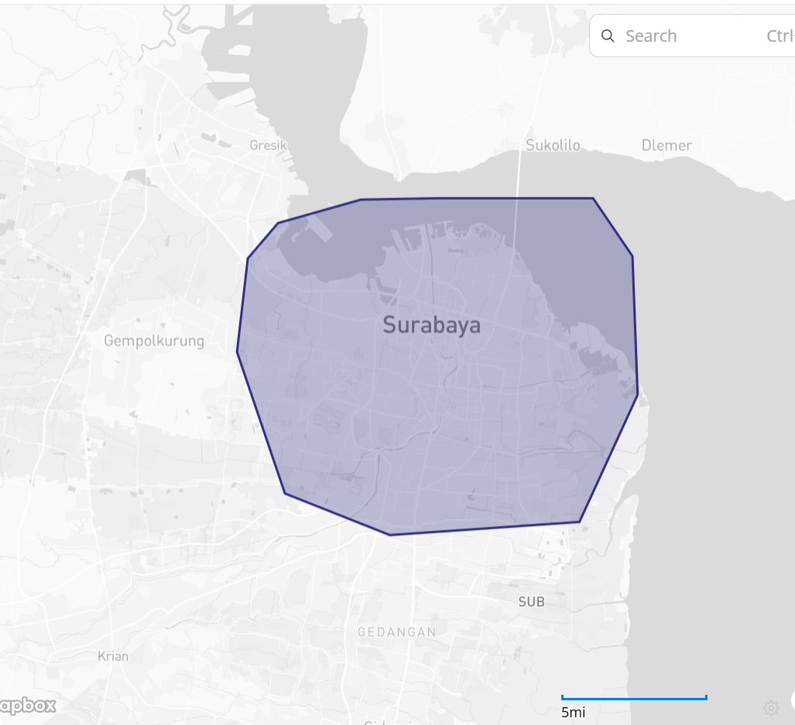
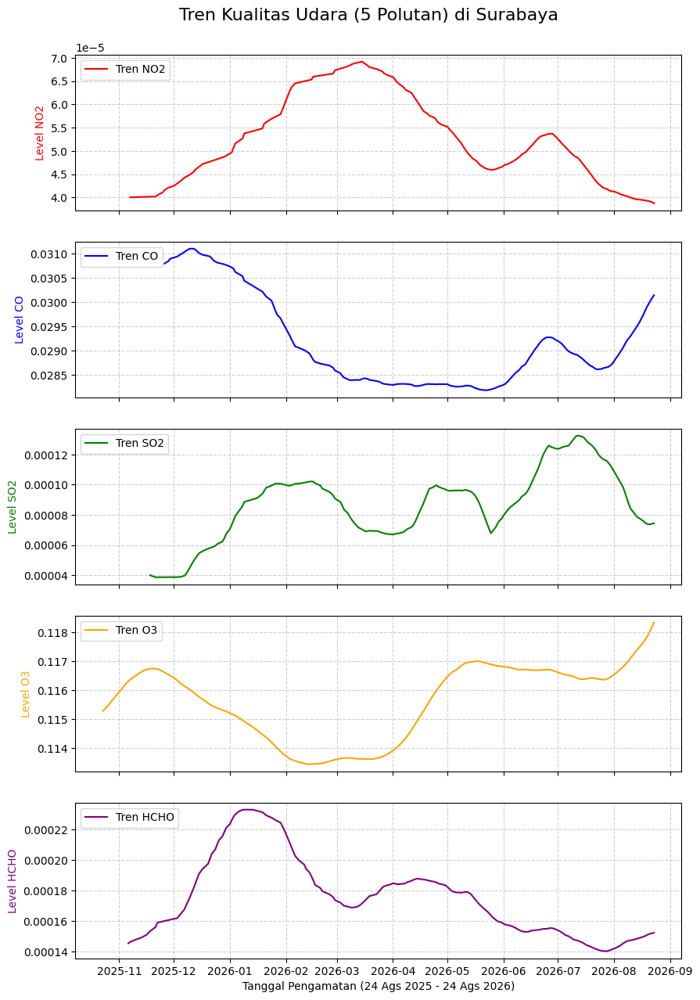
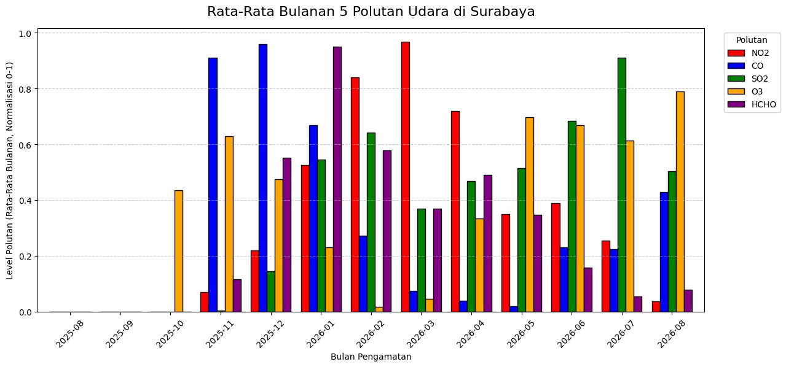

Analisis Kualitas Udara Kota Surabaya Menggunakan Data Sentinel-5P#
Bussines Understanding#
Indeks Kualitas Udara (Air Quality Index / AQI) adalah metrik pengukuran standar yang digunakan untuk menilai dan mengomunikasikan tingkat keparahan polusi udara di suatu wilayah kepada masyarakat umum. Nilai AQI digunakan sebagai indikator kondisi kualitas udara, di mana semakin tinggi nilainya menunjukkan kondisi udara yang semakin buruk dan semakin besar potensi dampaknya terhadap kesehatan manusia serta lingkungan sekitar.
Unsur-Unsur Polutan Kualitas Udara#
Kondisi kualitas udara sangat bergantung pada konsentrasi gas dan senyawa berbahaya di atmosfer. Berdasarkan data satelit Sentinel-5P yang digunakan dalam analisis ini, lima unsur polutan yang menjadi parameter pengukuran meliputi:
NO2 (Nitrogen Dioksida): Gas beracun dan reaktif yang sebagian besar bersumber dari emisi kendaraan bermotor dan pembakaran bahan bakar fosil.
CO (Karbon Monoksida): Gas tidak berwarna dan tidak berbau yang dihasilkan dari proses pembakaran tidak sempurna. Gas ini berbahaya jika terhirup karena dapat menghambat suplai oksigen dalam sirkulasi darah.
SO2 (Sulfur Dioksida): Gas berbau menyengat yang umumnya berasal dari pembakaran bahan bakar fosil, aktivitas industri, atau fenomena vulkanik. Gas ini juga dapat berkontribusi terhadap terjadinya hujan asam.
O3 (Ozon Permukaan): Ozon di permukaan tanah merupakan polutan sekunder yang terbentuk melalui reaksi kimia polutan lain, seperti NO2 dan emisi lainnya, dengan bantuan sinar matahari.
HCHO (Formaldehida): Senyawa organik yang mudah menguap (VOC) yang keberadaannya di udara dapat mengindikasikan aktivitas industri, pembakaran biomassa, atau proses polusi fotokimia.
Data Understanding#
Mengumpulkan Data Udara dari Copernicus Data Space#
Data kualitas udara dalam analisis ini diekstraksi dari satelit Sentinel-5P melalui layanan antarmuka pemrograman openEO pada Copernicus Data Space Ecosystem. Pengambilan data difokuskan pada pengamatan kualitas udara di wilayah Kota Surabaya, Jawa Timur, dengan rincian ekstraksi sebagai berikut:
Rentang Waktu: 24 Agustus 2025 s.d. 24 Agustus 2026.
Batas Wilayah (Bounding Box): Menggunakan parameter poligon spasial dengan batas Barat: 112.6404032, Selatan: -7.3505943, Timur: 112.8406449, dan Utara: -7.1834869.
Parameter Pengambilan: Pengambilan data dilakukan secara iteratif untuk 5 bands polutan (NO2, CO, SO2, O3, HCHO) guna menghindari limitasi sistem unduhan massal dari satelit.
Metode Agregasi: Data mentah diagregasi secara spasial (mengambil nilai rata-rata dari seluruh titik piksel di dalam poligon wilayah) dan secara temporal (dijadikan rata-rata harian) agar menghasilkan tren observasi yang konsisten.
print("Kernel jalan!")
Kernel jalan!
import openeo
connection = openeo.connect(
"openeo.dataspace.copernicus.eu"
).authenticate_oidc()
Authenticated using refresh token.
Membuat Datacube menggunakan koordinat#
Pada tahap ini dilakukan pembuatan datacube menggunakan koordinat wilayah pengamatan. Wilayah yang digunakan dalam analisis ini adalah Kota Surabaya, Jawa Timur.
Koordinat wilayah pengamatan direpresentasikan dalam bentuk polygon dengan format GeoJSON. Polygon tersebut digunakan sebagai Area of Interest (AOI) untuk menentukan wilayah yang akan dianalisis.
Data kualitas udara yang digunakan berasal dari satelit Sentinel-5P yang diakses melalui layanan openEO pada Copernicus Data Space Ecosystem. Pengambilan data dilakukan untuk lima unsur polutan, yaitu NO2, CO, SO2, O3, dan HCHO.
aoi = {
"type": "FeatureCollection",
"features": [
{
"type": "Feature",
"properties": {"id": "aoi_1"},
"geometry": {
"type": "Polygon",
"coordinates": [
[
[112.6609408, -7.195821],
[112.6458229, -7.2133666],
[112.6404032, -7.259774],
[112.6643638, -7.3299421],
[112.7168488, -7.3505943],
[112.81155, -7.3440876],
[112.8406449, -7.2809954],
[112.8380777, -7.2122346],
[112.8183678, -7.1834869],
[112.7403328, -7.1834869],
[112.7023892, -7.1841972],
[112.6609408, -7.195821]
]
]
}
}
]
}
# Membuat datacube untuk 5 unsur polutan secara terpisah
unsur_polutan = ["NO2", "CO", "SO2", "O3", "HCHO"]
datacubes = {}
for polutan in unsur_polutan:
datacubes[polutan] = connection.load_collection(
"SENTINEL_5P_L2",
temporal_extent=["2025-08-24", "2026-08-24"],
spatial_extent={
"west": 112.6404032,
"south": -7.3505943,
"east": 112.8406449,
"north": -7.1834869
},
bands=[polutan],
)
# Now aggregate by day to avoid having multiple data per day
# let's create a spatial aggregation to generate mean timeseries data
for polutan in unsur_polutan:
datacubes[polutan] = datacubes[polutan].aggregate_temporal_period(
reducer="mean",
period="day"
)
datacubes[polutan] = datacubes[polutan].aggregate_spatial(
reducer="mean",
geometries=aoi
)
Eksekusi Code#
# Eksekusi antrean unduhan untuk masing-masing polutan
for polutan in unsur_polutan:
print(f"Mengeksekusi unduhan {polutan}...")
datacubes[polutan].execute_batch(
title=f"Analisis {polutan}",
outputfile=f"kualitas_udara_{polutan}.nc"
)
Mengeksekusi unduhan NO2...
0:00:00 Job 'j-2609061418594ae6ae05b6919bf0d7bb': send 'start'
0:00:03 Job 'j-2609061418594ae6ae05b6919bf0d7bb': queued (progress 0%)
0:00:08 Job 'j-2609061418594ae6ae05b6919bf0d7bb': queued (progress 0%)
0:00:15 Job 'j-2609061418594ae6ae05b6919bf0d7bb': queued (progress 0%)
0:00:23 Job 'j-2609061418594ae6ae05b6919bf0d7bb': queued (progress 0%)
0:00:33 Job 'j-2609061418594ae6ae05b6919bf0d7bb': running (progress N/A)
0:00:46 Job 'j-2609061418594ae6ae05b6919bf0d7bb': running (progress N/A)
0:01:02 Job 'j-2609061418594ae6ae05b6919bf0d7bb': running (progress N/A)
0:01:21 Job 'j-2609061418594ae6ae05b6919bf0d7bb': running (progress N/A)
0:01:45 Job 'j-2609061418594ae6ae05b6919bf0d7bb': running (progress N/A)
0:02:15 Job 'j-2609061418594ae6ae05b6919bf0d7bb': running (progress N/A)
0:02:53 Job 'j-2609061418594ae6ae05b6919bf0d7bb': running (progress N/A)
0:03:40 Job 'j-2609061418594ae6ae05b6919bf0d7bb': finished (progress 100%)
Mengeksekusi unduhan CO...
0:00:00 Job 'j-2609061422484c0eb5ede26eff755943': send 'start'
0:00:03 Job 'j-2609061422484c0eb5ede26eff755943': created (progress 0%)
0:00:09 Job 'j-2609061422484c0eb5ede26eff755943': queued (progress 0%)
0:00:16 Job 'j-2609061422484c0eb5ede26eff755943': queued (progress 0%)
0:00:24 Job 'j-2609061422484c0eb5ede26eff755943': running (progress N/A)
0:00:34 Job 'j-2609061422484c0eb5ede26eff755943': running (progress N/A)
0:00:46 Job 'j-2609061422484c0eb5ede26eff755943': running (progress N/A)
0:01:02 Job 'j-2609061422484c0eb5ede26eff755943': running (progress N/A)
0:01:22 Job 'j-2609061422484c0eb5ede26eff755943': running (progress N/A)
0:01:46 Job 'j-2609061422484c0eb5ede26eff755943': running (progress N/A)
0:02:16 Job 'j-2609061422484c0eb5ede26eff755943': running (progress N/A)
0:02:53 Job 'j-2609061422484c0eb5ede26eff755943': running (progress N/A)
0:03:41 Job 'j-2609061422484c0eb5ede26eff755943': finished (progress 100%)
Mengeksekusi unduhan SO2...
0:00:00 Job 'j-26090614263841e4ac7e91709da546c4': send 'start'
0:00:02 Job 'j-26090614263841e4ac7e91709da546c4': created (progress 0%)
0:00:08 Job 'j-26090614263841e4ac7e91709da546c4': queued (progress 0%)
0:00:14 Job 'j-26090614263841e4ac7e91709da546c4': queued (progress 0%)
0:00:23 Job 'j-26090614263841e4ac7e91709da546c4': queued (progress 0%)
0:00:33 Job 'j-26090614263841e4ac7e91709da546c4': running (progress N/A)
0:00:45 Job 'j-26090614263841e4ac7e91709da546c4': running (progress N/A)
0:01:01 Job 'j-26090614263841e4ac7e91709da546c4': running (progress N/A)
0:01:20 Job 'j-26090614263841e4ac7e91709da546c4': running (progress N/A)
0:01:45 Job 'j-26090614263841e4ac7e91709da546c4': running (progress N/A)
0:02:15 Job 'j-26090614263841e4ac7e91709da546c4': running (progress N/A)
0:02:53 Job 'j-26090614263841e4ac7e91709da546c4': running (progress N/A)
0:03:40 Job 'j-26090614263841e4ac7e91709da546c4': running (progress N/A)
0:04:39 Job 'j-26090614263841e4ac7e91709da546c4': finished (progress 100%)
Mengeksekusi unduhan O3...
0:00:00 Job 'j-2609061431274c259bf239685b1895c0': send 'start'
0:00:03 Job 'j-2609061431274c259bf239685b1895c0': queued (progress 0%)
0:00:08 Job 'j-2609061431274c259bf239685b1895c0': queued (progress 0%)
0:00:15 Job 'j-2609061431274c259bf239685b1895c0': queued (progress 0%)
0:00:23 Job 'j-2609061431274c259bf239685b1895c0': queued (progress 0%)
0:00:33 Job 'j-2609061431274c259bf239685b1895c0': queued (progress 0%)
0:00:46 Job 'j-2609061431274c259bf239685b1895c0': running (progress N/A)
0:01:02 Job 'j-2609061431274c259bf239685b1895c0': running (progress N/A)
0:01:22 Job 'j-2609061431274c259bf239685b1895c0': running (progress N/A)
0:01:46 Job 'j-2609061431274c259bf239685b1895c0': running (progress N/A)
0:02:17 Job 'j-2609061431274c259bf239685b1895c0': running (progress N/A)
0:02:54 Job 'j-2609061431274c259bf239685b1895c0': running (progress N/A)
0:03:41 Job 'j-2609061431274c259bf239685b1895c0': running (progress N/A)
0:04:41 Job 'j-2609061431274c259bf239685b1895c0': finished (progress 100%)
0:00:03 Job 'j-26090614362242e1901d3a150d666a22': queued (progress 0%)
0:00:08 Job 'j-26090614362242e1901d3a150d666a22': queued (progress 0%)
0:00:23 Job 'j-26090614362242e1901d3a150d666a22': queued (progress 0%)
0:00:34 Job 'j-26090614362242e1901d3a150d666a22': queued (progress 0%)
0:00:47 Job 'j-26090614362242e1901d3a150d666a22': queued (progress 0%)
0:01:03 Job 'j-26090614362242e1901d3a150d666a22': running (progress N/A)
0:01:22 Job 'j-26090614362242e1901d3a150d666a22': running (progress N/A)
0:01:47 Job 'j-26090614362242e1901d3a150d666a22': running (progress N/A)
0:02:17 Job 'j-26090614362242e1901d3a150d666a22': running (progress N/A)
0:02:54 Job 'j-26090614362242e1901d3a150d666a22': running (progress N/A)
0:03:42 Job 'j-26090614362242e1901d3a150d666a22': finished (progress 100%)
Eksplorasi Data#
Tahapan eksplorasi ini berfokus pada analisis visual dan pembersihan data (Data Preprocessing), yang mencakup:
Visualisasi Peta: Memetakan lokasi wilayah pengamatan Kota Surabaya menggunakan library Folium untuk melakukan verifikasi terhadap cakupan spasial data.
Visualisasi Grafik: Data divalidasi dan dinormalisasi (Min-Max 0-1) lalu divisualisasikan dalam bentuk grafik garis (line chart) serta diagram balok berkelompok (grouped bar chart) rata-rata bulanan. Visualisasi ini bertujuan untuk melihat dan membandingkan fluktuasi kelima polutan yang memiliki skala pengukuran berbeda secara seimbang.
Identifikasi Anomali: Melakukan identifikasi missing values (data satelit harian yang kosong/NaN akibat kondisi pengamatan yang tidak tersedia) serta mendeteksi keberadaan outliers dan data noise yang mungkin dipengaruhi oleh kondisi pengukuran satelit.
Pembuatan Output: Mengonversi data dari format mentah NetCDF (
.nc) menjadi format tabel dan mengekspornya sebagai file.csvuntuk memudahkan proses pemodelan atau analisis data lebih lanjut.
Lokasi Data#
Data yang diambil berasal dari wilayah Kota Surabaya, Jawa Timur.

import netCDF4
import xarray as xr
import matplotlib.pyplot as plt
# Memuat 5 file terpisah ke dalam dictionary
unsur_polutan = ["NO2", "CO", "SO2", "O3", "HCHO"]
data_udara_dict = {}
for polutan in unsur_polutan:
data_udara_dict[polutan] = xr.load_dataset(
f"kualitas_udara_{polutan}.nc"
)
# Menghitung rolling mean 30 hari untuk masing-masing polutan
for polutan in unsur_polutan:
data_udara_dict[polutan] = data_udara_dict[polutan].rolling(t=30).mean()
warna_grafik = ["red", "blue", "green", "orange", "purple"]
# Membuat layout 5 baris grafik
fig, axes = plt.subplots(
nrows=5,
ncols=1,
figsize=(10, 15),
sharex=True
)
for i, (polutan, warna) in enumerate(
zip(unsur_polutan, warna_grafik)
):
# Mengambil data spesifik dari dictionary
data_udara = data_udara_dict[polutan]
axes[i].plot(
data_udara.t,
data_udara[polutan].to_numpy().flatten(),
color=warna,
label=f"Tren {polutan}"
)
axes[i].set_ylabel(
f"Level {polutan}",
color=warna
)
axes[i].legend(loc="upper left")
axes[i].grid(
True,
linestyle="--",
alpha=0.6
)
plt.xlabel(
"Tanggal Pengamatan (24 Ags 2025 - 24 Ags 2026)"
)
plt.suptitle(
"Tren Kualitas Udara (5 Polutan) di Surabaya",
fontsize=16,
y=0.92
)
# Ekspor grafik menjadi gambar
plt.savefig(
"grafik_5_polutan_surabaya.png",
bbox_inches="tight"
)
plt.show()

import pandas as pd
import numpy as np
# Membuat DataFrame kosong untuk menampung rata-rata bulanan
df_bulanan = pd.DataFrame()
for polutan in unsur_polutan:
# Mengambil nilai waktu dan nilai polutan dari xarray
waktu = data_udara_dict[polutan].t.values
nilai_asli = data_udara_dict[polutan][polutan].to_numpy().flatten()
# Normalisasi Min-Max (0 sampai 1)
nilai_norm = (
(nilai_asli - np.nanmin(nilai_asli))
/ (np.nanmax(nilai_asli) - np.nanmin(nilai_asli))
)
# Memasukkan ke DataFrame Pandas sementara untuk diolah
df_temp = pd.DataFrame({
'Waktu': waktu,
polutan: nilai_norm
})
# Ekstrak Tahun dan Bulan
df_temp['Bulan'] = pd.to_datetime(
df_temp['Waktu']
).dt.to_period('M')
# Hitung rata-rata per bulan
rata2_bulanan = df_temp.groupby('Bulan')[polutan].mean()
# Memasukkan hasil ke DataFrame utama
df_bulanan[polutan] = rata2_bulanan
# Mengubah format indeks bulan menjadi teks agar rapi di sumbu X
df_bulanan.index = df_bulanan.index.astype(str)
# Warna grafik untuk masing-masing polutan
warna_grafik = ["red", "blue", "green", "orange", "purple"]
# Plotting Diagram Balok Berkelompok
ax = df_bulanan.plot(
kind='bar',
figsize=(14, 6),
color=warna_grafik,
width=0.8,
edgecolor='black'
)
# Pengaturan visualisasi sumbu dan label
ax.set_ylabel("Level Polutan (Rata-Rata Bulanan, Normalisasi 0-1)")
ax.set_xlabel("Bulan Pengamatan")
ax.legend(
loc="upper right",
bbox_to_anchor=(1.12, 1),
title="Polutan"
)
ax.grid(
axis='y',
linestyle='--',
alpha=0.6
)
plt.xticks(rotation=45)
plt.title(
"Rata-Rata Bulanan 5 Polutan Udara di Surabaya",
fontsize=16,
pad=15
)
# Ekspor grafik menjadi gambar
plt.savefig(
"grafik_balok_bulanan_surabaya.png",
bbox_inches="tight"
)
plt.show()

import pandas as pd
import xarray as xr
unsur_polutan = ["NO2", "CO", "SO2", "O3", "HCHO"]
list_df = []
for polutan in unsur_polutan:
# Membaca file NetCDF
data = xr.load_dataset(
f"kualitas_udara_{polutan}.nc",
engine="netcdf4"
)
# Konversi data xarray menjadi DataFrame Pandas
# reset_index() digunakan untuk memunculkan koordinat waktu 't' menjadi kolom
df_temp = data[polutan].to_dataframe().reset_index()
# Memfilter hanya mengambil kolom waktu ('t') dan nilai polutannya
df_temp = df_temp[["t", polutan]]
# Mengatur kolom 't' sebagai index agar penggabungan tabel
# berpatokan pada tanggal
df_temp.set_index("t", inplace=True)
list_df.append(df_temp)
# Menggabungkan semua tabel polutan berdasarkan tanggal
df_gabungan = pd.concat(list_df, axis=1)
# Mengembalikan index tanggal menjadi kolom biasa
# dan mengganti namanya menjadi 'tanggal'
df_gabungan.reset_index(inplace=True)
df_gabungan.rename(
columns={"index": "tanggal", "t": "tanggal"},
inplace=True
)
# Format kolom tanggal menjadi YYYY-MM-DD
df_gabungan["tanggal"] = pd.to_datetime(
df_gabungan["tanggal"]
).dt.date
# Menyimpan hasil ke format CSV
df_gabungan.to_csv(
"data_kualitas_udara_surabaya.csv",
index=False
)
print("Data berhasil digabungkan dan disimpan.")
print(df_gabungan.head())
Data berhasil digabungkan dan disimpan.
tanggal NO2 CO SO2 O3 HCHO
0 2025-08-24 0.000039 0.034713 0.000458 0.116283 0.000205
1 2025-08-25 0.000036 0.028240 0.000139 0.117132 0.000127
2 2025-08-26 0.000051 NaN -0.000193 0.116061 0.000082
3 2025-08-27 0.000089 0.035705 0.000284 0.116041 0.000262
4 2025-08-28 0.000040 0.026555 0.000039 0.116122 0.000138